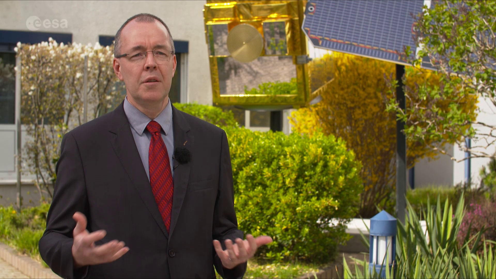
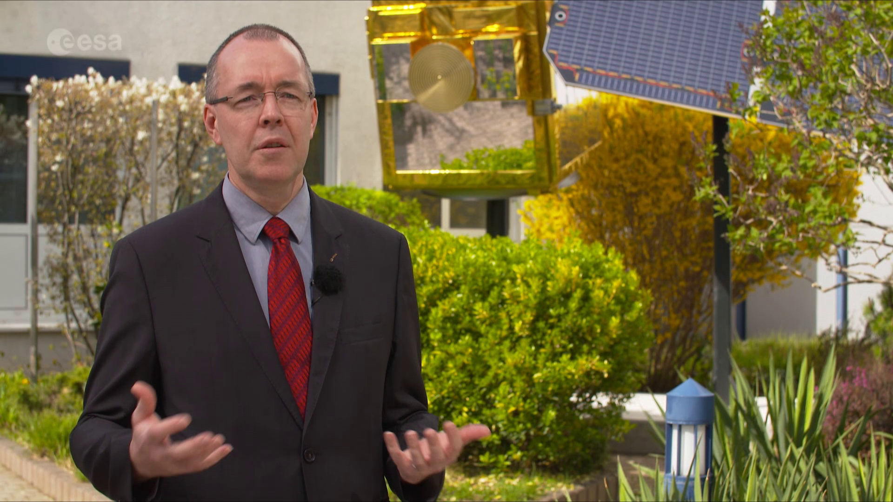

Space weather and its hazards
Space weather refers to the environmental conditions in space as influenced by solar activity.
For our daily lives and routine economic activities on planet Earth, the conditions within the Earth's magnetosphere, ionosphere and thermosphere are particularly important, as dynamic changes in the environment caused by the Sun and the solar wind can influence the functioning and reliability of spaceborne and ground-based systems and services, thereby potentially endangering human health and wellbeing through impact on this infrastructure.
Space weather deals with phenomena involving ambient plasma, magnetic fields, electromagnetic radiation and energetic charged particles in space and how these phenomena can influence economically vital systems, such as satellites, communication networks or power grids. In addition to the Sun, variations in non-solar sources of energetic particles, such as galactic cosmic rays, are also considered as space weather since they alter space environment conditions near the Earth.
What's affected?
In Europe's economy today, numerous sectors can potentially be affected by space weather. These range from space-based telecommunications, broadcasting, weather services and navigation, through to power distribution and terrestrial communications, especially at northern latitudes.
One significant influence of solar activity is seen in disturbances in satellite navigation services, like Galileo, due to space weather impacts on the upper atmosphere. This in turn can affect aviation, road transport, shipping and any other activities that depend on precise positioning.
For satellites in orbit, the effects of space weather can be seen in the degradation of spacecraft communications, performance, reliability and overall lifetime. For example, the solar panels − often called 'wings' − that convert sunlight to electrical power on board most spacecraft will steadily generate less power over the course of a mission, and this degradation must be taken into account in designing the satellite.
In addition, increased radiation due to space weather may lead to increased health risks for astronauts participating in human space missions, both today on board the International Space Station (ISS) in low Earth orbit and in future for human voyages to the Moon or Mars.
On Earth, the aviation sector − commercial airlines − may also experience damage to aircraft electronics and increased radiation doses to crews (at long-haul aircraft altitudes) during large space weather events. Space weather effects on ground can include damage and disruption to power distribution networks, increased pipeline corrosion and degradation of radio communications.
Low-risk, high-impact
Most solar events and the resulting space weather have little or no effect here on Earth for most people in their daily activities.
However, a recent ESA study estimated that the potential socio-economic impact in Europe today from a single extreme space weather event could be about €15 billion. In the coming years, the sensitivity of our society and our economy to space weather effects is expected to increase, particularly because of the increasing dependence on satellite navigation systems in transportation and aviation.
Within Europe's economy overall, each individual sector has a need for specific space weather data and services, together with a further requirement for those services to be tailored to their particular applications and uses.